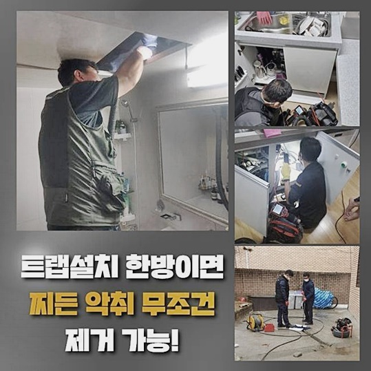
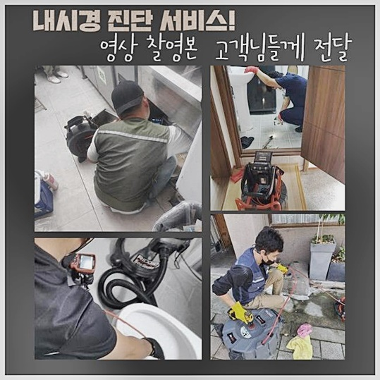
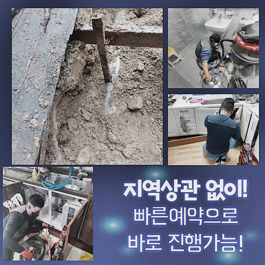
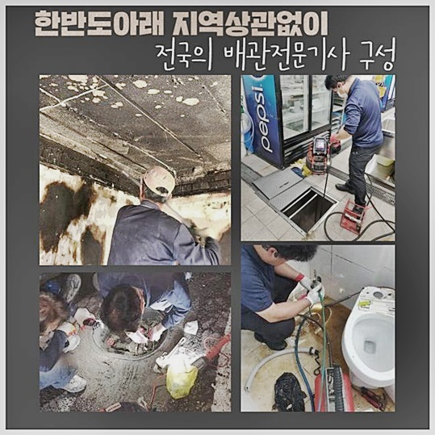
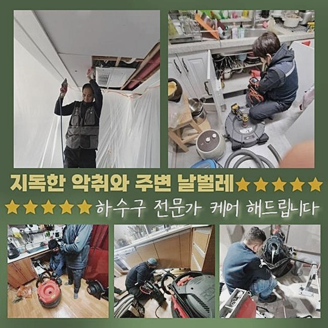
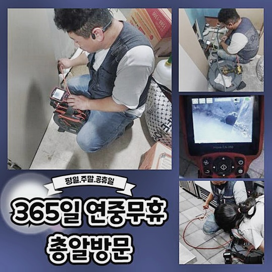
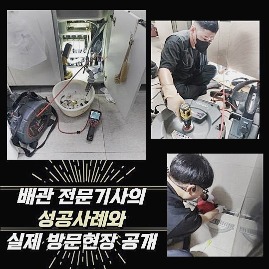

🏠 용산 용산동3가하수구막힘 서계동 맨홀막힘 부속수리
용인시 처인구 배관막힘 전문 시공 후기

📋 작업 개요
- 위치: 용인시 처인구, 수원시 영통구, 화성시 동탄
- 서비스 유형: 배관막힘, 고압세척, 내시경점검
- 작업 일시:
- 업체명: 하수구수사대 (010-5615-2118)
🔍 문제 상황
용산 용산동3가하수구막힘 서계동 맨홀막힘 부속수리
보통 건물들엔 수많은 지장물이 자리잡고 있죠 이것들 중에 큰 비중을 차지하는건 배수설비들이죠
수도 사용을 하지않는 건물이 없듯이 건물들엔 이에 해당하는 설비들이 적재적소 설치되어야하죠
혹시라도 잔해물들이 하수관로로 흘러가 내측이 막힌다면 다양한 측면에서 당혹스러움을 느낄거에요
위와같은 이유들로 배출과정의 결함이 수면 위로 떠오르면 서둘러 시정해주어야 하겠습니다
반대로 겉으로만 관찰했을 경우 이물이 어느정도로 오염된건지 추이를 살피기 어렵죠
마찬가지로 양상들도 예측하는게 어려워요
장비없이는 전문가여도 오차없는 수리를 속행할 수가 없어요
이러한 특징으로 인해서 보통 고객이면 사태는 더 심각해집니다
그럼에도 불구하고 현재에도 각자의 힘들로 청소들을 진행하려는 의뢰자분도 수두룩합니다
정보공유의 창이 발달되며 막혀버리는 문제의 조치법들이 많아졌는데요
이로인하여 압축장비나 클리너들을 사용하는 방법을 쉽게 접할 수 있죠
그럼에도 전체 위와 같이 해결될 순 없어요
그 까닭은 심층부의 이유들을 해결하지 않아 그런것인데요

🔎 원인 분석
💡 전문가 진단: 정밀 진단 장비를 사용하여 슬러지의 고착 여부를 판명하고 타격/세척 작업을 실시했습니다.
예상치 못한 이물이 있기도하고 석회잔해가 안쪽까지 잔존해 버렸을 수 있어요
또한 음식잔해나 알 수 없는 이물이 배관라인을 막게해요
위와같은 이유들로 해결을 실시하기 위해서는 하수구 전용 기계들이 요구되죠
가령 내시경장비 라 말씀드릴 수 있겠습니다
내시경기기는 선이 길게 늘어져있으며 끝자리에는 렌즈부와 조명등이 달려있는데요
이러한 까닭으로 어두우며 지름이 크지 않아도 진단이 가능한것입니다
덧붙여 청소할 때도 내시경기기는 절대적인 기능들을 수행해요
장비의 도움없이는 체계적인 계획없이 세척을 수행할 수 밖에요
이러한 까닭에 전문지식이 없는 사람들은 이물들을 제거시키는게 쉽지 않아요
그러므로 클리너를 이용하는것에 그칩니다
그도 그럴것이 뾰족한 도구로 하수관에 또 다른 문제들을 가한다면 수리비가 커질 가능성이 농후해요
또 자주 쓰이는 기기는 셔프트장비입니다
샤프트장비의 운용 덕에 작업기간을 줄일 수 있어요
정확하게 이물들을 목표하여 분쇄부분을 이용하므로 세척이 순항을 달리게 됩니다

🔧 작업 과정
해당 이유로 배수관 때문에 애를 먹는 고객님이라면 전문가를 고르는 시점에 장비 유무등을 봐두시면 좋겠죠?
또한 간단하게 금액과 관련된 부분들로 의뢰자를 설득시키는 업체도 가끔 있죠
경제적 지출도 물론 중요하지만 이외에도 꼼꼼히 살펴봐주세요
업체의 해결력과 연관해 해결책이 상이할 수 밖에 없고 절차에서 다르게 됩니다
고객님의 노력으로도 통수는 가능하죠
트래펑 등을 쓴다면 작은 증세들을 걷어내는건 불가하진 않죠
허나 원인들을 없애주지 않았으므로 추후에 증상들이 배수관에서 야기되는건 시간문제에요
며칠전 찾아뵌 고객님 댁은 집합건물 형태였습니다
문제들이 관로 속에서부터 퍼졌고 물들까지 안빠진다 설명하셨어요
반복하여 시도해보아야 약간이나마 배출되므로 생활측면에서도 곤란한 상태라고 설명하셨어요
내시경장치를 투입시켜 내부를 관찰하니 물티슈와 고착물들이 보였는데요
상태를 보아하니 배관의 내구성이 떨어진 건물일것으로 판단했는데 굳어버린 잔여물질이 한번에 흘러가 집수시설로 내보내지 못한것으로 보았어요
또한 엘보라인엔 머리카락까지 목격되었어요
우선 석션기기와 샤프트기기를 준비했어요
하수관로의 이물질을 제거시키는것부터 해보기로했습니다
처음엔 석션기기가 사용되는데요
배수 문제는 상태와 관련해 그에 맞는 기계를 사용하는것이 옳은데요
1차 세척을 마치고 굳어버린 이물을 제거시키기위해 샤프트장비를 삽입했습니다
사슬부의 작동을 기반으로 고착물들을 제거시켰어요
이때에도 조심해야 하는 사항이 있어요
힘 조절에 실패하면 하수관을 망가뜨릴 수 있어 빈틈없는 장비들의 이용이 필요하죠
저희들은 배관해결사들로 경험부족으로 인한 엉성한 결과가 발생할 일은 없는데요
그러나 혹시 모를 상황에서도 대응하고자 내시경장비의 영상도 살핍니다


✅ 작업 완료
샤프트장비로 고착물 배출을 수행하니 이전보다 배수라인이 넓게 되었어요
곧이어 작업의 마무리를 위하여 테스트들을 밟아나갑니다
해당 과정은 배수구에 수돗물을 배출시켜 손쉬운 방법들을 써서 관찰해요
이행하고있는 방식들이 인지하기 쉬운 방식이고 배수 속도 저하의 문제들을 파악할 수 있는 단계로서 꼭 진행한답니다
배수구로 수도를 배출하니 배수관으로 조속히 흐르는걸 목격했고 청소를 마무리했는데요
저희업체는 지역에 개의치않고 어디라도 서둘러 찾아뵈니 배수구에 결함이 야기되었다면 주저없이 전화해주세요 문의 전반에 대해 맞이해드리겠습니다




⚠️ 하수구 배관 막힘 예방 및 관리 가이드
- ✅ 머리카락, 비닐, 물티슈 등 물에 분해되지 않는 이물질은 절대 흘려보내지 마세요.
- ✅ 기름기 많은 식기는 설거지 전 키친타올로 먼저 기름때를 닦아내세요.
- ✅ 주기적으로 배수구에 뜨거운 물을 가득 부어주어 유지방 고착을 방지하세요.
- ✅ 작업 후 1년 이내 재발 시 무상 A/S 보증 서비스를 제공합니다.
💡 핵심 정리
- 확실한 장비 작업(내시경 점검 및 샤프트 스케일링)으로 원인을 뿌리 뽑습니다.
- 작업 후 1년 이내에 동일한 부위 재발 시 100% 무상 A/S 서비스를 보장합니다.
- 서울 · 경기 · 인천 전 지역에 24시간 언제든 긴급 출동할 수 있도록 항시 대기 중입니다.
❓ 자주 묻는 질문 (FAQ)
🚨 용인시 처인구 배관막힘 문제로 고민이신가요?
정확한 원인 진단과 확실한 시공으로 재발 없는 해결을 약속드립니다.
24시간 긴급 출동 | 서울 · 경기 · 인천 전지역 | 1년 내 재발 시 무상 A/S